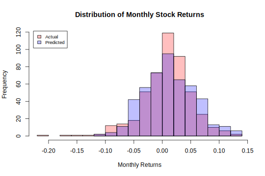

Stock Market Returns
Stock Market returns are often categorized as normal or near normal. But is this even true?
To check, we’ll look at market returns from 1982 to today at different time frames.
Returns by Period
Daily Returns:
The distribution of daily returns looks distinctly different than a normal distribution with the same mean and standard deviation. Furthermore, the number of data points is very large and can be an approximation for the population of daily returns.
By using a normal distribution to simulate returns. The tails and center would be under weighted, while values between the first and second deviation would be slightly overrepresented. Thus, causing risk to be miscalculated.
Weekly Returns:
The distribution is fitting better, but still under estimates center by a bit.
A normal distribution is an okay fit.
Monthly Returns:
The normal distribution seems to fit pretty well, but the number of observations does decrease.
As time period increase, the distributions seem to get flatter and flatter.

Quarterly Returns:
Now the center seems to be overrepresented. However, there is the added problem of decreasing observations. Making predictions increasingly inaccurate.
Yearly Returns:
This is truly where the number of points becomes too small. To get a clearer picture, a basket of individual stocks should be used to increase the number of observations. An index of stocks will not provide enough points to be sufficient in this case.
Comparing Average Returns
Even though the mean returns are different, when compounded for the same time period, the price ends up around $8,000 and each curve having a similar shape. It can be implied that each time period comes from the same source.
However, the actual price is much less than the actual price due to returns not having a constant rate of return and negative returns having a much stronger effect on the price.
For instance: A stock has a return of r but then a return of -r
p*(1+r)*(1-r) = p*(1-r2)
Further investigation: Due to stock price exhibit Brownian Motion, a Dirac Delta Function may better represent stock returns.
There is also a positive drift with the mean return as time period increases.
Link to article on Dirac Distribution: https://en.wikipedia.org/wiki/Dirac_delta_function
Link to paper on using Dirac Distribution: https://www.diva-portal.org/smash/get/diva2:942736/FULLTEXT01.pdf